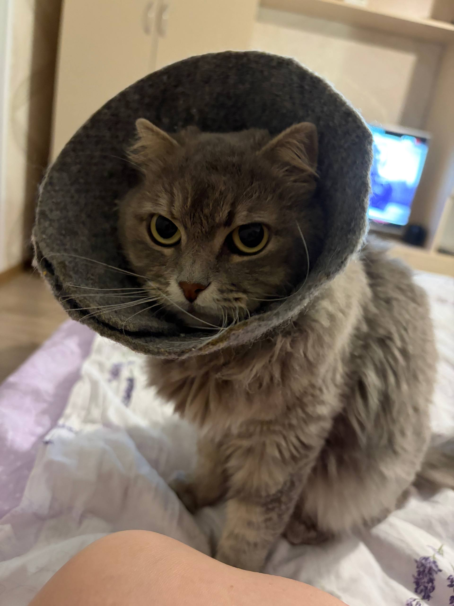
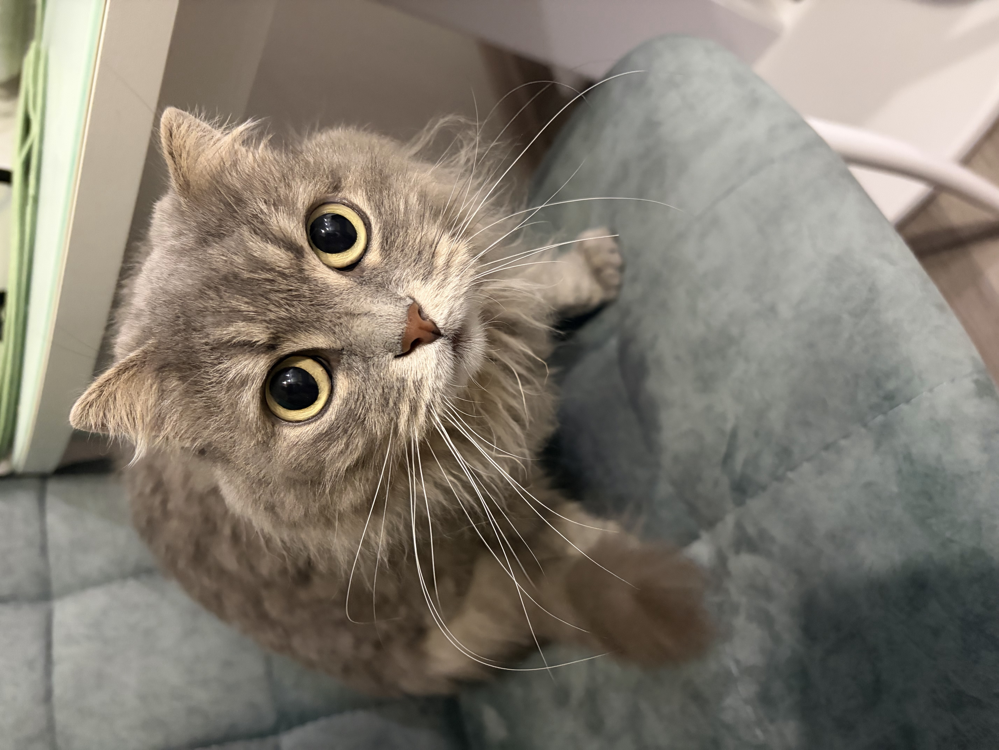

Мои фото





Неажно какого цвета кошка, если она защищает прод от мышей - Исскуство войны с легаси кодом
Привет! Я кошка Лина Senior White Hat Cat©. Со своей командой
заняла 1е место на международном хакатоне Кот пишет код, найдя 0-day
уязвимость в автоматической кормилке c лакомствами. Являюсь активным контрибьютором языка программирования
MeowScript < ver 3.0. Защищу ваши данные от хакеррров, а серррверррную от мышей, одним
щелчком пальца когтя. Я устойчива к CO2, поэтому могу
работать в команде даже с самым душным плюсовиком. Определяю по запаху фишинговые ссылки. Ваша облачная
инфрастррруктуррра под моей надёжной защитой. Спите спокойно, я посторожу её.
Работаю удалённо, со шкафа или подоконника. Зарплатные ожидания: 300 пачек Dreamies
в наносекунду. Мой дивиз: Найти баг можно даже в пустой миске
!
/\_/\
( o.o )
> ^ <
